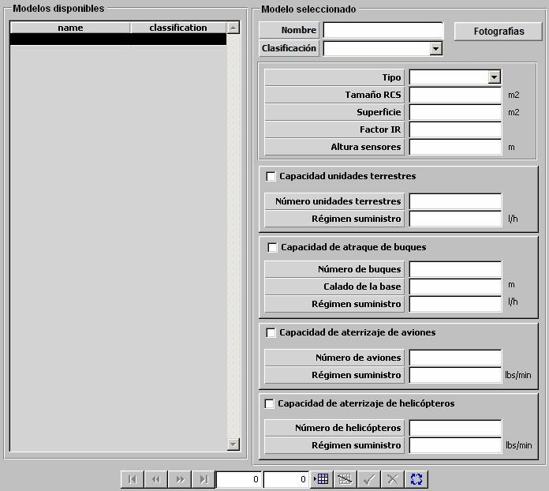

Plataformas Bases

Descripción de los parámetros:
Fotografías: Pulsando este botón se accede a la ventana de Fotografías desde la que se pueden incluir varias fotografías de una plataforma, asociadas a distintos niveles de reconocimiento. Durante la ejecución del ejercicio, cuando se sitúe el Hook en una detección, dependiendo del nivel de reconocimiento de la misma se mostrará una de estas fotografías.
Para las plataformas bases se consideran 4 niveles de reconocimiento por lo que se podrán incluir hasta 4 fotografías.

En esta ventana pulsando en los botones Nivel 1 (2,3 ó 4) se accede al navegador desde el que se puede buscar y cargar una imagen.
Los botones Nivel 5 y Nivel 6 no están accesibles para las plataformas aéreas.
Pulsando el botón Aceptar se cierra la ventana y se guardan en memoria todas las imágenes cargadas hasta que finalmente se acepten o rechacen los datos de la plataforma en edición.
Tipo de Plataforma: Puede tomar los siguientes valores:
- PORT
- AIRPORT
- NAVAL
- AERIAL
- FIX
Este parámetro determina la clasificación de los contactos correspondientes a esta plataforma obtenidos por los sensores de otras unidades.
Tamaño RCS: Este parámetro es tenido en cuenta el modelo de radar para calcular la distancia a la que esta plataforma es detectada.
Unidades: m2
Rango: 1 – 9999
Superficie: Este parámetro es tenido en cuenta el modelo de visual para calcular la distancia a la que esta plataforma es detectada.
Unidades: m2
Rango: 0 – 999
Factor IR: Factor que modela la variación de Tamaño IR de la plataforma con el "Aspecto" (dado por el ángulo alfa = rumbo del contacto - marcación del contacto).
Unidades: Tanto por uno
Rango: 0,0 – 1,0
Ejemplo:
Si Factor IR = 0 ⇒ Tamaño IR = Tamaño IR · seno (alfa).
Si Factor IR = 0,25 ⇒ Tamaño IR = Tamaño IR ( 0,25 + 0,75 · seno (alfa) ).
Si Factor IR = 1 ⇒ Tamaño IR no cambia con Aspecto.
Altura Sensores: Altura de instalación de los sensores en la plataforma. Este parámetro influye en los modelos de sensores, tanto para determinar el alcance de los sensores propios como para determinar el alcance al que es detectada esta plataforma por sensores de otras unidades.
Unidades: metros
Rango: 1 – 9999
Capacidad de Unidades Terrestres: Determina si la plataforma tiene capacidad de actuar como base para unidades terrestres.
Número de Unidades Terrestres: Cantidad de unidades terrestres que pueden estar en esta base simultáneamente. Este parámetro sólo puede ser introducido si se ha seleccionado Capacidad de Unidades Terrestres.
Unidades: ---
Rango: 0 – 999
Régimen de Suministro: Régimen con el que esta plataforma suministra combustible a las unidades terrestres que se encuentren en esta base. Este parámetro sólo puede ser introducido si se ha seleccionado Capacidad de Unidades Terrestres.
Unidades: Litros / hora
Rango: 0 – 999999,9
Capacidad de Atraque de Buques: Determina si la plataforma tiene capacidad de actuar como base para unidades de superficie y submarinas.
Número de Buques: Cantidad de unidades de superficie o submarinas que pueden estar en esta base simultáneamente. Este parámetro sólo puede ser introducido si se ha seleccionado Capacidad de Atraque de Buques.
Unidades: ---
Rango: 0 – 999
Calado de la Base: Calado máximo de las unidades de superficie o submarinas que pueden estar en esta base. Este parámetro sólo puede ser introducido si se ha seleccionado Capacidad de Atraque de Buques.
Unidades: metros
Rango: 0 – 999
Régimen de Suministro: Régimen con el que esta plataforma suministra combustible a las unidades de superficie o submarinas que se encuentren en esta base. Este parámetro sólo puede ser introducido si se ha seleccionado Capacidad de Atraque de Buques.
Unidades: Litros / hora
Rango: 0 – 999999,9
Capacidad de Aterrizaje Aviones: Determina si la plataforma tiene capacidad de actuar como base para aviones.
Número de Aviones: Cantidad de aviones que pueden estar en esta base simultáneamente. Este parámetro sólo puede ser introducido si se ha seleccionado Capacidad de Aterrizaje Aviones.
Unidades: ---
Rango: 0 – 999
Régimen de Suministro: Régimen con el que esta plataforma suministra combustible a las unidades aviones que se encuentren en esta base. Este parámetro sólo puede ser introducido si se ha seleccionado Capacidad de Aterrizaje Aviones.
Unidades: Libras / minuto
Rango: 0 – 999999,9
Capacidad de Aterrizaje Helicópteros: Determina si la plataforma tiene capacidad de actuar como base para helicópteros.
Número de Helicópteros: Cantidad de helicópteros que pueden estar en esta base simultáneamente. Este parámetro sólo puede ser introducido si se ha seleccionado Capacidad de Aterrizaje Helicópteros.
Unidades: ---
Rango: 0 – 999
Régimen de Suministro: Régimen con el que esta plataforma suministra combustible a las unidades helicópteros que se encuentren en esta base. Este parámetro sólo puede ser introducido si se ha seleccionado Capacidad de Aterrizaje Helicópteros.
Unidades: Libras / minuto
Rango: 0 – 999999,9